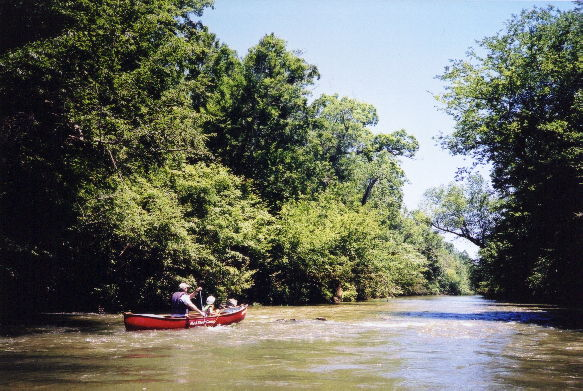
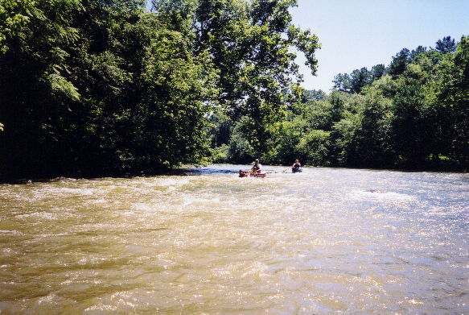
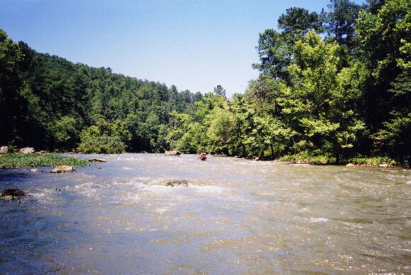
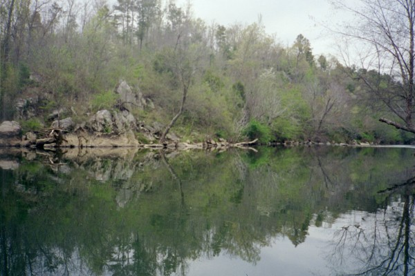
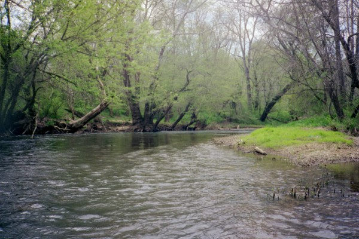

Terrapin Creek
|  | John and Abby Conover on Terrapin Creek at about 650 cfs |
|  | John, Abby, and Mary D' |
|  | The longest and best rapid on Terrapin |
|  | Terrapin Creek quiet water (Photo Courtesy Mark Cumnock) |
|  | Terrapin Creek (Photo Courtesy Mark Cumnock |